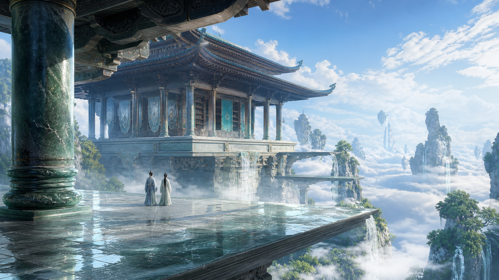

路由
单体仙境 × 华彩通透仙侠
一处地标，撑起完整仙境
围绕唯一主体建立近景框架、人物承载面、主建筑、从属空间和极远天际，让画面明亮、通透且具有可信尺度。
输入构想
雨后初晴的悬空藏经阁，植物鲜绿，不要灰蒙蒙。
目标效果
单一地标清楚；湿润材质可见；小人物证明尺度；天空和云隙保留通透呼吸感。
提示词摘要
16:9，低机位人眼高度，雨后悬空藏经阁；五层纵深、微小背影人物、统一侧逆光、湿润玉石与漆木、透明蓝灰阴影、无栏杆开放边缘。